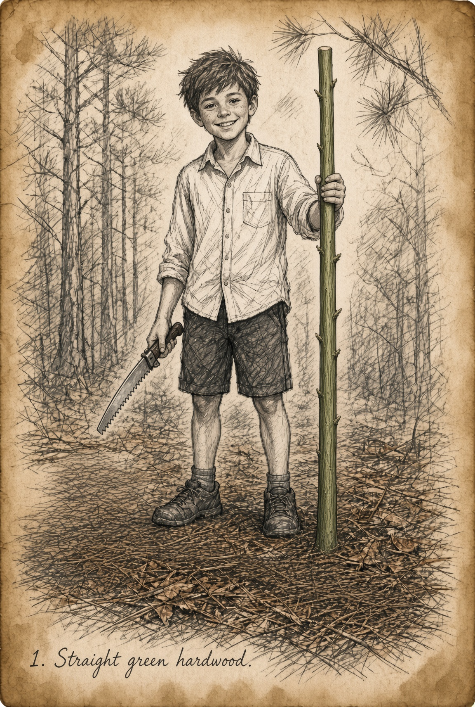
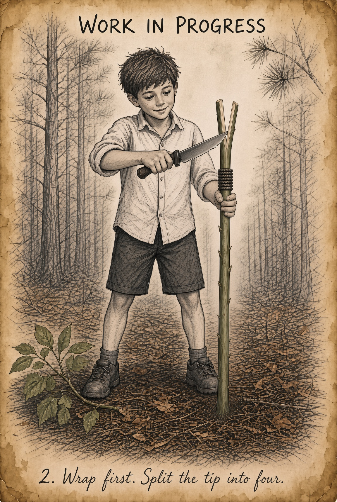
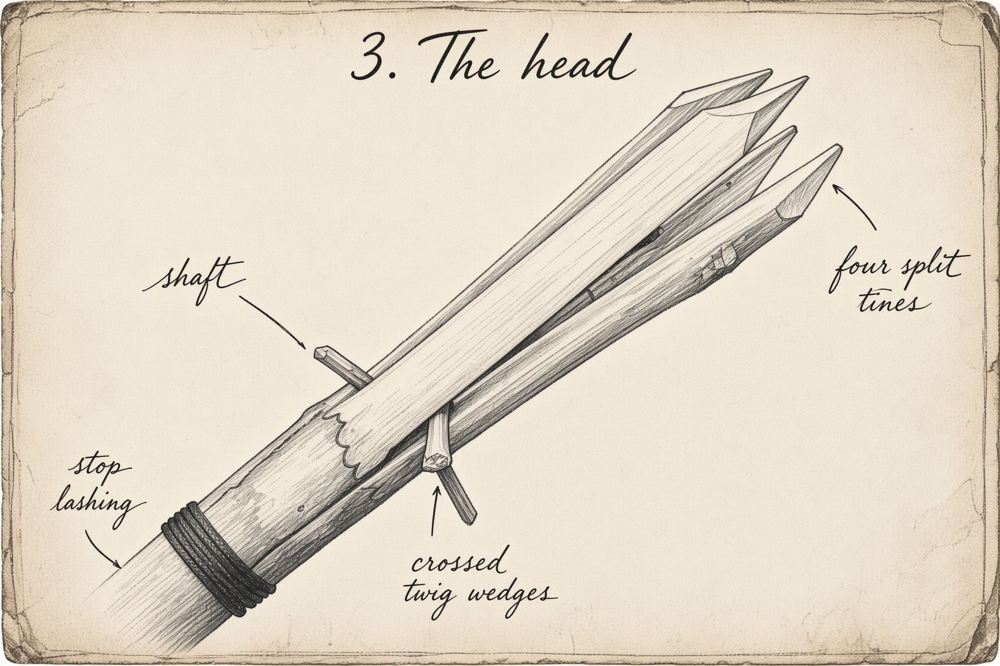
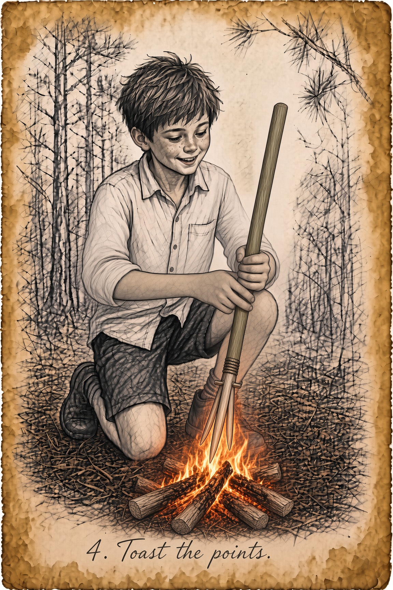

Neighbor Columns · Chritty’s Bushcraft
Homemade Four-Point Spear
Four points beat one. You don’t have to hit perfect. You pin.
What you need
- Straight green hardwood sapling (oak, hickory, elm). About as tall as you. Thick as a broom handle, not a fence post.
- Fixed-blade knife and a baton stick
- Two pencil-thick twigs, 3 inches long
- Cordage or paracord, a few feet
Steps
-
Cut and clean. Square the fat end. Knock off twigs. Shave a little bark at the working end.

Straight green hardwood -
Lash first. Wrap tight about 8–10 inches down from the tip. That stop keeps the shaft from splitting all the way down.
-
Split an X. Baton a split down the center to the wrap. Turn 90 degrees. Split again. Four even quarters.

Wrap first. Split the tip -
Wedge. Slide two twigs into the splits so they cross. Tap slow. Prongs should flare, not explode.
-
Lash the wedges. Second wrap holds the twigs so they don’t spit out when you jab.

What the head actually looks like — not a pitchfork; one sapling split into four, two pencil twigs crossed through the splits -
Sharpen. Point each tine. Thick enough they don’t snap. Optional: small inward barbs.
-
Fire-harden. Hold tips over coals, not in flame. Rotate. Toast to light brown. Black is burnt and weak.

Toast the points

What the head actually looks like
Not a pitchfork. One sapling. Tip split into four quarters about 6–8 inches. Two pencil twigs crossed through the splits. Gap at the points is only an inch or two. Stop-cord on the solid shaft under the split. Image plate above (step 5) is the accurate head — copy a real gig, not a pitchfork.
Why four
One point misses. Four points make a basket. That’s a gig, not a lance.
Don’t
- Don’t burn the points.
- Don’t split past the first wrap.
- Don’t walk with the points at eye level.
- Don’t throw it at anything that isn’t a legal target.
Cadence: monthly on the 1st Monday. More from Chritty when the woods say so.